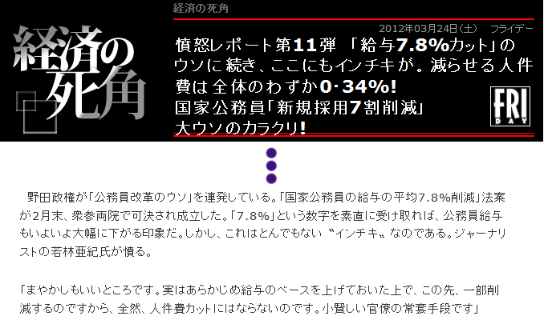
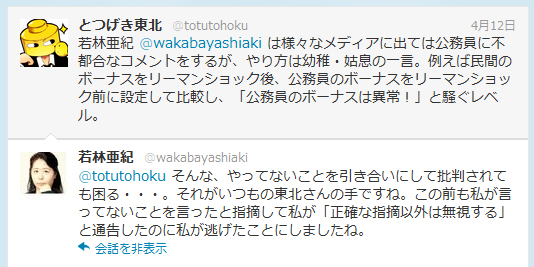
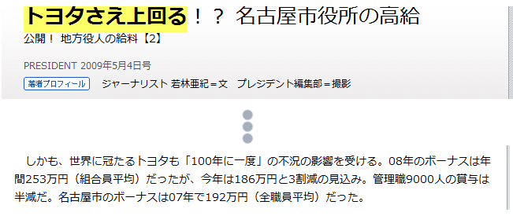

嘘デタラメを平然と垂れ流す自称ジャーナリスト、若林亜紀とのTwitterでの議論記録
本件については、有志がトゥギャッターにもまとめてくれました。周辺の人々の反応も含まれています。
とつげき東北 3/14
また若林某が大嘘書いてるよ。公共のために正しいじょうほうを流すとか考えないのかね？
嘘ばっかり書いて自分が儲けりゃそれでいいって、ジャーナリストじゃねえよ。
@wakabayashiaki 現在発売中の週刊ポスト「国家公務員の給与７．８％カットは大嘘だった」にコメント。
若林亜紀
@totutohoku どこが嘘かご指摘ください。
↑ここまでのやりとりについては、この議論の後半でフラグ回収します。
とつげき東北 3/29
公務員の給与カット。若林亜紀 @wakabayashiaki
の解説「まやかしもいいところです。実はあらかじめ給与のベースを上げておいた上で、この先、一部削減するのですから、全然、人件費カットにはならない」 完全な嘘。こいつはまじでゴミ。 http://gendai.ismedia.jp/articles/-/32109
若林とかいう自称ジャーナリスト @wakabayashiaki
さん、なんで嘘ばっかり書いて公務員叩きするんですか？ そんな賤しいことをしてまで小銭稼ぎたいんですか？
|  |
若林亜紀
@totutohoku どこが嘘かまやかしなのか、ご指摘ください。前から聞いてるのにお答えいただけなくて残念です。
とつげき東北
@wakabayashiaki 本当にわかってないんですか？ もし本当ならちゃんと答えますよ。でもそれは本来はジャーナリストの仕事だとは思いますけれど。
まずはこのあたりから反論願います。 /totutohoku/index.php?%A1%CA%CC%A4%C4%EA%B9%C6%A1%CB%BF%AE%CD%D1%A4%C7%A4%AD%A4%CA%A4%A4%B8%C0%CF%C0%BF%CD%A5%EA%A5%B9%A5%C8
若林亜紀
@totutohoku リンクが切れてましたよ。それで、突撃さんのブログでは内容が改変されミスリードされてますね。正確なコピーかリンクを探してきますが、このようなページを見つけましたのでご参考まで。
http://detail.chiebukuro.yahoo.co.jp/qa/question_detail/q1252636272
とつげき東北
改変したつもりはないので具体的にご教示ください。
それから今回のあなたの「まやかしもいいところです。実はあらかじめ給与のベースを上げておいた上で、この先、一部削減するのですから、全然、人件費カットにはならない」なる解説について。
http://gendai.ismedia.jp/articles/-/32109 @wakabayashiaki
本府省業務調整手当は、名目上は国会対応等、本府省の激烈な業務に必要な人材の確保が困難になっているから創設されたもの。当時の与党は民主党ではなく、時系列的に、「給与7.8％、賞与10％カット」の準備であろうはずがない。
@wakabayashiaki
実態としては、本省では膨大なサービス残業が行われており、せめてそのうち一部を充当しようという考えで作られたものと思われるが、あなたはサービス残業など存在しないかのように書いている。
@wakabayashiaki
また、本省手当創設と同時に、課長補佐に対する俸給の特別調整額を廃止しているのに、あなたはまるで単に手当が増えたかのように書いている。ちなみに、本省におけるポスト分布から考えて、課長補佐より係長・係員の方が多い。
@wakabayashiaki
つまり、当然だが国家公務員の給与水準は対象者全員下がる。だがあなたは、「給与を上げておいて、そのうち一部をカットする、官僚の常套手段」なる旨のたまっている。事実に照らしても、時系列からしても、完全に嘘ですよね。
@wakabayashiaki
若林亜紀
@kurosati_ @totutohoku １ 激務の人もいるけれど、農水省の出先機関では一日中パソコンゲームをやっていましたよ。2
給与を上げたと人事院が公表「給与構造改革期間（h18-21）に抑制されてきた昇給号俸を今春に回復」
http://www.jinji.go.jp/kankoku/h23/pdf/23point.pdf
とつげき東北 4/3
反論はそれだけですか！？ まず、論旨をすり替えないでください。私は、あなたの「給与を上げておいて、そのうち一部をカットする、官僚の常套手段」なる旨の発言が、完全な嘘であると指摘しているのです。 @wakabayashiaki
ちなみに、あなたの言う「農水省の出先機関」は本府省ではありませんが、本府省手当がつくのですか？ いずれにしても給与は下がるわけなので余談ですが。
@wakabayashiaki
昇給の抑制回復。あなたは「給与をアップしている！」といった調子で書いていますが、民間よりも給与水準が下回っている傾向のみられる若年・中堅層（H22人事院勧告別紙第1に明記）を中心に昇給を回復するだけです。
@wakabayashiaki
回復ですよ。昇給するわけではありません。昇給がストップされていたのが、一部元に戻るだけです（その間に減額された給与及び賞与は戻ってきません）。このあたりもあなたのミスリード、常套手段です。
@wakabayashiaki
本論に戻ります。質問：１．平成24年4月からの給与及び賞与カットに関して、「給与を上げておいて、そのうち一部をカットする、官僚の常套手段」であるか否か回答してください。２．「常套手段」に該当するとお考えの場合、その根拠を示してください。 @wakabayashiaki
若林亜紀
@wakabayashiaki 大雑把にいうと、国家公務員の３分の１が課長補佐以上の管理職待遇です。詳細が知りたければ、人事院のホームページを探すと等級別在職者数が出ています。そちらを見てください。
とつげき東北
課長補佐が管理職！？ RT @wakabayashiaki 大雑把にいうと、国家公務員の３分の１が課長補佐以上の管理職待遇です。詳細が知りたければ、人事院のホームページを探すと等級別在職者数が出ています。そちらを見てください。
一般に、本省企画官クラス以上を管理職と言います。行政職俸給表（一）適用対象者のうち、該当職員は、平成22年7月1日時点で全体の5.00％です（霞が関以外含む）。それを3割に水増しとは……
@wakabayashiaki
管理職手当を受けるのは5.00％だけで、課長補佐には管理職手当はつきません。まるで3割の職員が管理職手当を受け取っているかに誤解させるような書き方はやめてください。
@wakabayashiaki
余談ですが「給与を上げたと人事院が公表」とおっしゃられた件、実施されませんでした。なぜ人事院勧告を無視するのか、私には憲法解釈上理解しかねるのですが、4月1日、号俸は回復されませんでした。「官僚の常套手段」とやらはどうしたんでしょうね？
@wakabayashiaki
（これに関しては事実誤認でした。4月1日付で昇給したのですが、通知が4月13日であったため、勘違いしてしまいました。申し訳ありません。）
まぁ以上は枝葉末節の話でして、私としては4月3日に質問させていただいた2点にご返答いただければ充分です。お忙しいところ恐縮ですが、4月11日（水）までにご回答いただきたく思います。一連のやりとりは、Webページにまとめる予定です。
@wakabayashiaki
若林亜紀
@totutohoku 「公務員の３分の１が課長補佐以上の上位職」と、２００５年に谷垣財務大臣（当時）が答申しているのですが・・・こちらの３ページを見てください。http://www5.cao.go.jp/keizai-shimon/minutes/2005/0524/item5.pdf
とつげき東北
は？
上位級（の）職員比率については書いてありますが、上位職などとは書いてありませんよ。ましてや、あなたの言うような「管理職」という言葉はどこにも出てきません。あなた自称ジャーナリストでしょ？ 資料くらいちゃんと読んでくださいよ。
@wakabayashiaki
しかもデータは地方公務員のもの。国家公務員で、課長補佐を管理職と認識している職員はまずいないと思いますが、もし可能なら、管理職だと言える根拠を述べてください。また、仮に管理職だとすれば、管理職手当がつかない理由を述べてください。
@wakabayashiaki
「管理職が多くて問題だ！」とでも言いたいのでしょうが、そもそも管理職手当がつかないので財政的には無意味な指摘です。また、本省の課長補佐など激務に忙殺されており、業務的にも的外れの指摘です。
@wakabayashiaki
若林亜紀
@totutohoku 上位級職員は上位職です。それに、課長補佐は本給の８パーセントぐらいの手当をもらってるでしょう？ 民間ではそれを管理職手当と呼ぶのですよ。突撃さんはこういう細かな嘘をついて揚げ足をとるだけ。公務員のごまかしの手口そのものです。もう正確な指摘以外無視しますね。
とつげき東北
は？
本省では課長補佐に本省手当が付きますよそりゃ。でも係員にも付きます。ということはあれですか、係員も管理職ですか。あなた独自の解釈は結構です。上位級職員が管理職だという根拠をちゃんと述べてください。何痛いところ突かれて意地になってんですか。
@wakabayashiaki
あとこれね。本省手当以外の意味なら、ウソですね。知らないから私に聞いてるんですか？
自分で調べなさいよ。まあそれより4/3の質問にだけは答えてくださいね。 @wakabayashiaki それに、課長補佐は本給の８パーセントぐらいの手当をもらってるでしょう？
某中央省庁の給与担当者
「課長補佐は8%の手当てを貰っている」とかどこを見れば分かるんだろう。何の手当てか明記してないし漠然としてるし。公務員給与に関する本が政府刊行物センターから出てるのに、そこすら見てないとか無いよなあ、見れば分かるんだけど。
この後、4/3の質問に対する返答なし。
とつげき東北
若林亜紀 @wakabayashiaki は、嘘・誇張・ミスリードを多用して公務員を叩きまくる、自称ジャーナリスト。3月29日、明らかな嘘があったためTwitterで指摘したところ「具体的にどこか」と返答があったので、具体的かつ正確に指摘したが、結局、言い訳さえなかった。
若林亜紀 @wakabayashiaki は、回答するかわりに、筆者の記述を嘘呼ばわりし、「公務員のごまかしの手口そのもの」などと意味不明の発言をし、「もう正確な指摘以外は無視」するとわめき、逃げた。そもそも若林の記述の誤りを「正確に指摘」したのだが。
若林亜紀 @wakabayashiaki は様々なメディアに出ては公務員に不都合なコメントをするが、やり方は幼稚・姑息の一言。例えば民間のボーナスをリーマンショック後、公務員のボーナスをリーマンショック前に設定して比較し、「公務員のボーナスは異常！」と騒ぐレベル。
若林亜紀 @wakabayashiaki の著書『ドロボー公務員』に至っては、一般公務員の平均年収が1001万円であるかに錯覚させる記述までしている。あまりにも稚拙で笑ってしまうが、実際にこうした記事を信じる国民は多く、無意味な「公務員叩き」の激しさは増す一方である。
若林亜紀 @wakabayashiaki の、真実を伝えず、嘘・誇張・ミスリードを利用して誤った情報を世間に広める行為は、公共の利害に照らし害悪であるため、ここで、当該人物の言説の信頼性の低さに関して注意喚起しておく。※本件はwebサイトに正確にまとめる予定。
若林亜紀 @wakabayashiaki の、統計を悪用したミスリード等については、ちょうど今週土曜より東京大学において統計学等の集中講義を行うことから、題材にさせていただこうと考えている。良い「悪い例」のサンプルを体現していただき、ありがとうございます。以上。
その後、4/13に返答あり。
若林亜紀
@totutohoku そんな、やってないことを引き合いにして批判されても困る・・・。それがいつもの東北さんの手ですね。この前も私が言ってないことを言ったと指摘して私が「正確な指摘以外は無視する」と通告したのに私が逃げたことにしましたね。
とつげき東北
だまれ。早くこれを読んで /hp/wakabayashi.htm 、4月3日の問いに答えろ
とつげき東北
ああ〜「やってないこと」って、「民間のボーナスをリーマンショック後、公務員のボーナスをリーマンショック前に設定して比較し、『公務員のボーナスは異常！』と騒ぐレベル」を指してたんですね。ごめんなさい見落としてました。
@wakabayashiaki

で、それについてですが、やってないことにはできません。私の方では証拠とっていますから。ここの５段落目。

/hp/toyota.jpg あの、本気で言いますけど、嘘はやめていただいてよろしいですか？ ていうか、もう死んでいただいてOK。
@wakabayashiaki
とつげき東北
最後に、3/14「また若林某が大嘘書いてるよ」のフラグ回収しておきますね。週刊ポストの「国家公務員の給与７．８％カットは大嘘だった」という記事にコメントを寄せていますよね。自衛隊はカットが半年遅れる分、7.8％に達しないという内容でした。
ここで、真実を求める本物のジャーナリストなら、「いくらなんでもこんなデタラメ記事は出せない」と怒るでしょう。なぜなら、この先2年間、7.8％程度どころか、平均12％程度の年収カットとなるからです（行（一）係員〜本省課長補佐までで試算）。
それをあなたは、あろうことか、7.8％よりもカット率が低いかのごとく醜く振舞い、嘘にまみれた小汚い小銭を手に入れた。私があなたを決してジャーナリストと認めず、蒙昧なる嘘つきおばさんにしか過ぎないと認識する理由はこれです。
あなたを批判すると「どこが嘘かご指摘ください」と返ってくる。具体的に指摘すると「それはウソですね」と何の根拠も出さずに返すばかりか「それがあなたの常套手段」だのと言い出す。あるいは「そんなこと書いてない・・・」と事実を捻じ曲げる。馬鹿ですか。
今後ともあなたの売国的な嘘・デタラメ・ミスリード・不誠実な対応に対し、公共の利害を考慮し、注意喚起を続けます。おかげさまで先日までの議論のTogetterまとめは、1日ほどで早くも1万viewを超えています。では、よろしくお願いします。
一言。あなたは特殊法人を内部告発した後自主退職され、本人訴訟で勝訴されました。大変立派で、尊敬します。当該告発は、恐らくはあなたの高潔な正義感に依拠したものであったはずです。あなたが今行っていることは、当時の正義感に照らして、いかがですか？
→公務員給与・生涯賃金の驚くべき安さについての具体例はこちら
{kind=link}